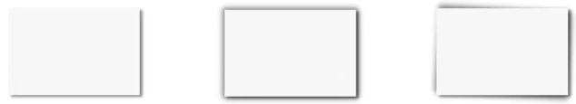

| Nombre del atributo |
Descripción |
valores posibles |
Ejemplos de uso |
Imagen representativa |
Fuente de información |
| Font-size |
Define el tamaño del texto |
12px, 1.2em, large, 80% |
p { font-size: 20px; } |
 |
CSS font-size |
| Border-radius |
Redondea las esquinas de un elemento |
5px, 50%, 1em |
div { border-radius: 10px; } |
 |
Border-radius - CSS |
| Display |
Define como se muestra un elemento en el flujo del elemento |
block, inline, flex, grid, none |
div { display: block; } |
.png)
.png) |
Display en CSS |
| Display:flex |
Activa el modelo flexbox para distribiir y alinear elementos |
flex, junto con justify-content, align-items, etc |
div { display: flex; justify-content: center; } |
.png)
.png) |
CSS Flexbox |
| Position |
Define el tipo de posicionamiento de un elemento |
static, relative, absolute, fixed, sticky |
div { position: absolute; top: 10px; left: 10px; } |
 |
The position |
| Box-shadow |
Aplica una sombra alrededor del elemento |
offset-x offset-y blur color |
div { box-shadow: 2px 2px 5px gray; } |
 |
box-shadow |
| Overflow |
Controla qué sucede cuando el contenido desborda un contenedor |
visible, hidden, scroll, auto |
div { overflow: auto; } |
 |
Overflow |
| Z-index |
Define la posición en el eje Z de un elemento |
1, 999, -1 |
div { z-index: 10; position: relative; } |
 |
Z-index |
| Opacity |
Define la opacidad/transparencia del elemento |
0 (transparente) a 1 (opaco) |
div { opacity: 0.5; } |
 |
Opacity |
| Margin / Padding |
Controlan el espacio exterior/interior del elemento |
10px, 1em, auto |
div { margin: 20px; padding: 10px; } |
 |
Margin |
| Background-color |
Define el color de fondo del elemento |
red, #FFF, rgba(0,0,0,0.5) |
div { background-color: lightblue; } |
 |
CSS background-color |
| Text-align |
Alinea horizontalmente el texto dentro de un contenedor |
left, right, center, justify |
p { text-align: center; } |
 |
text-align |
| Color |
Establece el color del texto |
red, #000, rgb(255,255,255) |
p { color: darkblue; } |
 |
Color |
| Cursor |
Cambia el tipo de cursor cuando pasa sobre el elemento |
pointer, default, text, move, etc |
button { cursor: pointer; } |
 |
Cursor |